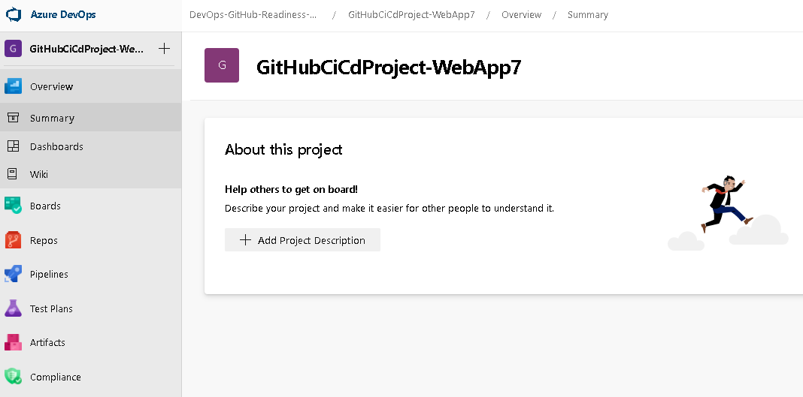

こんにちは、Japan Developer Support Core チームです。
Azure Repos や GitHub など、世の中には様々なリポジトリ サービスが公開されていて、まさに群雄割拠の様相を呈していますね。
今日は、これらのリポジトリ (Repos) を Azure DevOps (以降、DevOps) から利用して楽しんでみましょう。
本日のメニューはこちらです。
- Visual Studio からプッシュした Azure Repos 上のソースコードを、Azure Pipelines 経由でビルド・リリースして、Azure App Service を発行する
- Azure ポータルから Azure Repos に接続して、Azure Pipeline 経由でビルド・リリースして、Azure App Service を発行する
- GitHub 上のソースコードを、Azure Pipelines 経由でビルド・リリースして、Azure App Service を発行する
前提条件
- アクティブなサブスクリプションが含まれる Azure アカウントをご用意ください。無料でアカウントを作成できます。
- このブログ記事では、Windows 上の AppService に ASP.NET Core Web アプリケーションをデプロイします。
- 先に「Azure App Service に色々な方法で WebApp をデプロイしてみよう！」の「5. DevOps でビルドしたものを Azure Pipeline 経由で発行する」までを完了してください。
- GitHub アカウントを取得しておいてください。
1. Visual Studio からプッシュした Azure Repos 上のソースコードを、Azure Pipelines 経由でビルド・リリースして、Azure App Service を発行する
まずは、前回「Azure App Service に色々な方法で WebApp をデプロイしてみよう！」の「5. DevOps でビルドしたものを Azure Pipeline 経由で発行する」までを完了してくださいね。
「5. DevOps でビルドしたものを Azure Pipeline 経由で発行する」を完了していると、以下のリソースが揃っている状態になります。
- VSCiCdProject-WebApp5：Visual Studio で作成した ASP.NET Core Web アプリケーション
- VSCiCdProject-WebApp5-prj：DevOps 上のプロジェクト
- VSCiCdProject-WebApp5：VSCiCdProject-WebApp5 のソリューション一式が push されている、VSCiCdProject-WebApp5-prj プロジェクトのリポジトリ
- VSCiCdProject-WebApp5-dev-as：DevOpsのVSCiCdProject-WebApp5-prj プロジェクトの VSCiCdProject-WebApp5 リポジトリから、CI/CD でデプロイされる Azure App Service
2. Azure ポータルから Azure Repos に接続して、Azure Pipeline 経由でビルド・リリースして、Azure App Service を発行する
準備ができたら、ここで一つリポジトリを使って実験をしてみましょう。
(1) Azure ポータルから、新しい Azure App Service を一つ (DeployCenterCiCdProject-WebApp6) 作ります。
(2) DeployCenterCiCdProject-WebApp6 デプロイセンターから、Azure Repos を選択して CI/CD を続行します。
(3) ビルドプロバイダーでは、Azure Pipeline を選択して続行します。
(4) VSCiCdProject-WebApp5-prj プロジェクトの VSCiCdProject-WebApp5 リポジトリを横取りしてみましょう。
プロジェクトは「VSCiCdProject-WebApp5-prj」、リポジトリは「VSCiCdProject-WebApp5」、ブランチは「master」、Web アプリケーション フレームは「ASP.NET Core」を選択して続行します。
さて、何が起きるでしょうか。
CI/CD の構成が完了した DeployCenterCiCdProject-WebApp6 のデプロイセンターから、「ビルド パイプライン」「リリース パイプライン」リンクをクリックして DevOps 側の状態を見てみましょう。
まずは Build パイプラインから。
VSCiCdProject-WebApp5-prj の Build パイプラインに、「deploycentercicdproject-webapp6 - CI」が追加されているのが分かります。
同じく、VSCiCdProject-WebApp5-prj の Release パイプラインに、「deploycentercicdproject-webapp6 - CD」が追加されているのが分かりますね。
つまり、異なる二つの Azure App Service が、同じ Azure Repos のリポジトリ (VSCiCdProject-WebApp5) のソースコードを元に、異なるパイプライン経由で CI/CD されたことになります。
3. GitHub 上のソースコードを、Azure Pipelines 経由でビルド・リリースして、Azure App Service を発行する
いよいよ、GitHub のリポジトリと CI/CD 連携してみましょう。
GitHub アカウントを取得しておいてくださいね。
(1) GitHub にサインインして、以下のサンプルを自分の GitHub リポジトリに fork しておきます。このリポジトリを使いましょう。
https://github.com/jpdscore/AspNetCoreWebApplicationCSharp
(2) DevOps にプロジェクト (GitHubCiCdProject-WebApp7-prj) を作成します。

(3) Azure ポータルから、新しい Azure App Service を一つ (GitHubCiCdProject-WebApp7) 作ります。
(4) GitHubCiCdProject-WebApp7 のデプロイセンターから、Github を選択して CI/CD を続行します。
(5) ビルドプロバイダーでは、Azure Pipelineを選択して続行します。
(6) GitHub の組織・リポジトリ・ブランチと、DevOps の組織・プロジェクト・フレームワークを選択します。組織は GitHub のサンプル (https://github.com/jpdscore/AspNetCoreWebApplicationCSharp) を fork した先の組織、リポジトリは「AspNetCoreWebApplicationCSharp」、ブランチは「master」、Azure DevOps 組織は「既存」の組織名、プロジェクトは「GitHubCiCdProject-WebApp7」、Webアプリケーション フレームは「ASP.NET Core」を選択して続行します。
CI/CD の構成が完了したら、GitHubCiCdProject-WebApp7 のデプロイセンターから「ビルド パイプライン」「リリース パイプライン」リンクをクリックして DevOps 側の状態を見てみましょう。
GitHubCiCdProject-WebApp7-prj の Build パイプラインに、「githubcicdproject-webapp7 - 1 - CI」が追加されているのが分かります。
同じく GitHubCiCdProject-WebApp7-prj の Release パイプラインにも、「githubcicdproject-webapp7 - 1 - CD」が追加されているのが分かりますね。
ここで、GitHubCiCdProject-WebApp7-prj の Project settings から、ブレード内の Service connections を開いてみましょう。
以下のように、二つの Service connection が自動生成されているのが分かります。
この二つは、デプロイセンターから CI/CD を構成した際に自動的に作成されたもので、それぞれ以下のサービスに接続する時の認証を行うために必要な Service connection です。
| githubcicdproject-webapp7 - 1 - Azure | Azure Resource ManagerへのService Connection(Service Principalを使用) |
| githubcicdproject-webapp7 - 1 - GitHub | GitHubへのService Connection(PATを使用) |
今回は、Azure Repos と GitHub のリポジトリに触れながら、Azure App Service を CI/CD で発行する方法のほんの一部をご紹介しました。次回は、もう少し違う CI/CD の方法ををご紹介するか、または Azure Pipeline の Agent についてご紹介しようと思っています。どうぞよろしくお願いします！
本ブログの内容は弊社の公式見解として保証されるものではなく、開発・運用時の参考情報としてご活用いただくことを目的としています。もし公式な見解が必要な場合は、弊社ドキュメント (https://docs.microsoft.com や https://support.microsoft.com) をご参照いただくか、もしくは私共サポートまでお問い合わせください。